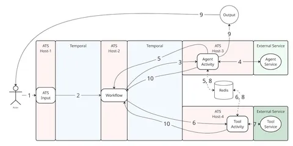

Агент «Исследовать», о котором мы писали ранее, должен быть устойчивым к непредвиденным ситуациям. Собственно, исследование — процесс комплексный, требующий проанализировать несколько источников, вызвать разные инструменты и запустить модели. Если где-то что-то упадёт, то всё придется начинать сначала. Чтобы этого не происходило, в Яндексе использовали платформу Agent Transport System (ATS). О ней на Хабре рассказал Алексей Логинов, ведущий разработчик в команде, которая отвечает за инфраструктуру Алисы AI. Кратко выделим главное.
Сперва агентский режим ассистента реализовали на OpenAI Agents SDK. Это работало, но стейты выполнения хранились локально, а при любых сбоях приходилось начинать всё заново. Нужно было найти такое решение, которое позволяло бы продолжать работу именно из состояния до падения. Кроме того, хорошо бы иметь под капотом распределённое выполнение, чтобы агенты и тулы взаимодействовали друг с другом, находясь на разных хостах.
Для построения отказоустойчивых систем хорошо подходит фреймворк Temporal. Он оперирует двумя типами сущностей: workflow (объект с состоянием, который описывает последовательность шагов) и activity (функции, которые вызываются из workflow). Фреймворк фиксирурет решения, принятые workflow, и результаты завершённых activity. В случае падения Temporal восстанавливает выполнение, не вызывая уже сделанные activity.
Однако Temporal не умеет в стриминг, а агенту было бы хорошо выдавать ответы пользователю по мере их получения. К тому же агенты, написанные на Temporal, привязываются к Temporal SDK, что может быть не слишком удобно в случае «переезда» в будущем.
Поэтому Temporal взяли как основу для надёжности, а уже на фреймворке построили центральный сервер платформы — ATS, чьи протоколы и реализуют агенты. ATS также берёт на себя, например, оркестрацию и транспортировку данных и событий между агентами, тулами и моделями на разных хостах. В итоге схема работы выглядит так:
1. Клиент отправляет запрос в ATS.
2. ATS делает запрос в Temporal на запуск workflow. Temporal запускает workflow.
3. Workflow делает запрос в Temporal на запуск activity корневого агента. Temporal запускает activity корневого агента.
4. Activity корневого агента поднимает двунаправленный gRPC-стрим к сервису агента.
5. Если агенту нужно вызвать модель / инструмент / дочернего агента — он просит ATS, ATS сообщает workflow о необходимости запустить activity (signal/update).
6. Workflow запускает соответствующую activity.
7. Activity поднимает двунаправленный gRPC-стрим к сервису.
8. Все activity одного workflow общаются между собой через in-memory-очереди от дочернего activity к родительскому — так чанки данных передаются в реальном времени.
9. Корневой агент пишет свои чанки во внешний стриминговый сервис — пользователь видит ответ по мере выполнения.
10. Завершённые activity возвращают результаты workflow — Temporal сохраняет их.
В случае сбоя ATS начинает взаимодействовать с агентом заново. Когда агент просит вызвать инструмент, модель или дочернего агента, ATS проверяет, есть ли в хранилище какой-то результат работы по этому запросу с прошлого раза. Если да, то агент получает результат и шаг за шагом «перематывается вперёд» до состояния, в котором он был до сбоя, без повторных вызовов тяжёлых LLM и инструментов.
А подробнее о том, как всё устроено, читайте на Хабре.
ML Underhood
